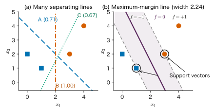
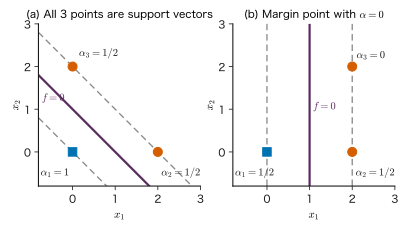
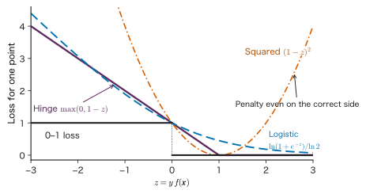

Chapter 11Support Vector Machines — Maximizing the Margin
- Infinitely many straight lines separate two classes without error. Which one should we choose so that it also predicts well on samples we have not yet seen?
- Which data points determine the position of the boundary? If we remove the samples far from the boundary, does the boundary change?
- How can the same idea be extended when the classes cannot be separated by a straight line, or when the labels contain errors or overlaps?
Suppose we plot glassy samples and crystallized samples on a plane of two descriptors. There is a gap between the two groups, and we can draw as many separating lines through it as we like. One line passes very close to one group, while another passes through the middle of the gap. When the points shift slightly because of measurement variability, the line that grazes a group is likely to make errors, whereas the line through the middle is unlikely to. The formulation of this “middle of the gap” as the problem of maximizing the distance to the nearest points (the margin) is the support vector machine (SVM).
The solution of an SVM has a remarkable property. The boundary is determined only by a small number of points right next to it (the support vectors), and the answer does not change if the distant points are removed. This follows directly from the Karush–Kuhn–Tucker (KKT) conditions (the complementarity condition) in Chapter 7, Section 7.7. Moreover, when we rewrite the optimization problem as the dual problem, the data appear only through dot products, and replacing them with the kernels of Chapter 10 yields curved boundaries. In this chapter we proceed from margin maximization (11.1) to the primal and dual problems (11.2), support vectors (11.3), hand calculation (11.4), the soft margin that allows overlaps (11.5), the kernel SVM (11.6), the difference between a score and a probability (11.7), and solution methods (11.8), and we close with how to use SVMs on materials data (11.9) and points of caution (11.10).
- Derive the signed distance from a point to a hyperplane, and explain why the margin equals $1/\norm{\bm{w}}$ (fixing the scale).
- Form the Lagrangian from the primal problem of the hard-margin SVM and derive the dual problem line by line. State how the variables of the primal and dual problems differ.
- Show from the complementarity condition that only the support vectors remain in the prediction, and find $b$.
- Compute $\bm{\alpha}$, $\bm{w}$, $b$, and the margin by hand for small problems with two points, three points, and one dimension, and check the answer with the KKT conditions.
- Derive the dual problem $0\le\alpha_n\le C$ of the soft margin, classify the points into three types, and explain the equivalence with the hinge loss.
- Explain how $\gamma=1/(2\ell^{2})$ of the RBF kernel and $C$ affect the shape of the boundary and overfitting, and choose them by cross-validation.
- Explain that the SVM score $f(\bm{x})$ is not a probability.
Sections for the introductory route: This is a chapter of the detailed route. On the introductory route, you need to read only Section 11.11 (Summary). (The next chapter on the introductory route is Chapter 13.)
Notation: In this chapter only, the labels are $y_n\in\{-1,+1\}$
In the other chapters of this book we write the binary classification label as $y\in\{0,1\}$, but in this chapter only we take $y_n\in\{-1,+1\}$ ($+1$ and $-1$ are the two classes). This lets us write “point $n$ lies on the correct side of the boundary” as the single condition $y_nf(\bm{x}_n)\gt0$. The $y=1$ of the logistic regression in Chapter 9 corresponds to $y=+1$ in this chapter, and $y=0$ corresponds to $y=-1$. As in Chapter 7, we write the dual variables (the multipliers of the constraints) as $\alpha_n$ (in Chapter 22, $\alpha_t(j)$ is used with a different meaning, as the forward variable). As in Chapter 7, we write the Lagrangian as $\Lambda$.
11.1 Margin Maximization — A Boundary Through the Middle of the GapDetailed Route
11.1.1 What We Want to Do
In Figure 11.1(a), the four points are divided into orange circles ($y=+1$) and blue squares ($y=-1$). Each of the three lines A, B, and C separates the four points correctly. The accuracy on the training data is 100 % for all three, so accuracy alone cannot decide among them. We therefore compare the “distance to the nearest point.” The number in parentheses is this distance: 1.00 for B, 0.71 for A, and 0.67 for C. If a measurement error moves a point by 0.8, the classification can change for A and C, but not for B. If we choose the line that maximizes the distance to the nearest point (Figure 11.1(b)), we obtain the boundary that is most robust against small fluctuations of the points. This is the starting point of the SVM.

11.1.2 Definitions and Notation
Let the data be $\data=\{(\bm{x}_n,y_n)\}_{n=1}^{N}$, with inputs $\bm{x}_n\in\R^{D}$ and labels $y_n\in\{-1,+1\}$. We map the inputs by a basis function (feature map) $\bm{\phi}:\R^{D}\to\R^{M}$ and write $\bm{\phi}_n\equiv\bm{\phi}(\bm{x}_n)\in\R^{M}$. Through Section 11.5, you may read this as $\bm{\phi}(\bm{x})=\bm{x}$ ($M=D$).
Definition 11.1: Linear discriminant function and decision boundary
Let
\begin{equation} f(\bm{x})=\bm{w}^{\tp}\bm{\phi}(\bm{x})+b \label{eq:11-model} \end{equation}be a discriminant function with weight $\bm{w}\in\R^{M}$ and bias $b\in\R$. We predict $+1$ if $f(\bm{x})\gt0$ and $-1$ if $f(\bm{x})\lt0$. The set of points where $f(\bm{x})=0$ (a hyperplane in the feature space) is called the decision boundary. In this chapter we call the value of $f(\bm{x})$ itself the score. The score is not a probability (Section 11.7).
11.1.3 The signed distance from a point to a hyperplane
We briefly restate the same derivation as in Chapter 9, Section 9.1, using the notation of this chapter. We split a point $\bm{\phi}$ in the feature space into the nearest point $\bm{\phi}_{\perp}$ on the hyperplane $\bm{w}^{\tp}\bm{\phi}+b=0$ and the displacement from it. Since $\bm{w}$ is perpendicular to the hyperplane (for two points $\bm{u},\bm{v}$ on the hyperplane, $\bm{w}^{\tp}(\bm{u}-\bm{v})=(-b)-(-b)=0$), the displacement points in the direction of $\bm{w}$, and we can write
$$ \bm{\phi}=\bm{\phi}_{\perp}+r\,\frac{\bm{w}}{\norm{\bm{w}}} $$Here $r$ is the signed distance (positive on the side toward which $\bm{w}$ points). Multiplying both sides by $\bm{w}^{\tp}$ from the left and adding $b$, we get
$$ \bm{w}^{\tp}\bm{\phi}+b=\underbrace{\bm{w}^{\tp}\bm{\phi}_{\perp}+b}_{=0}+r\,\frac{\bm{w}^{\tp}\bm{w}}{\norm{\bm{w}}}=r\norm{\bm{w}} . $$Therefore $r=f(\bm{x})/\norm{\bm{w}}$. If point $n$ is on the correct side, $f(\bm{x}_n)$ and $y_n$ have the same sign, so the distance toward the correct side is
\begin{equation} \begin{aligned} r_n&=\frac{y_n\,f(\bm{x}_n)}{\norm{\bm{w}}}\\ &=\frac{y_n\bigl(\bm{w}^{\tp}\bm{\phi}_n+b\bigr)}{\norm{\bm{w}}} \end{aligned} \label{eq:11-dist} \end{equation}(it is negative if the point is on the wrong side).
11.1.4 Fixing the scale makes the margin $1/\norm{\bm{w}}$
Suppose the data are linearly separable (there is a $(\bm{w},b)$ that separates all points correctly). We define the margin as the distance to the nearest point, $\min_n r_n$. Margin maximization is then
$$ \max_{\bm{w},b}\ \min_{n}\ \frac{y_n\bigl(\bm{w}^{\tp}\bm{\phi}_n+b\bigr)}{\norm{\bm{w}}} $$In this form it is hard to handle. The key observation is that if we multiply $(\bm{w},b)$ by a positive constant $c$ to get $(c\bm{w},cb)$, neither the location of the boundary $f=0$ nor $r_n$ changes (the numerator and the denominator are both multiplied by $c$). In other words, one degree of freedom, an overall scale factor, remains in $(\bm{w},b)$. We therefore choose the scale so that
\begin{equation} \min_{n}\ y_n\bigl(\bm{w}^{\tp}\bm{\phi}_n+b\bigr)=1 \label{eq:11-canon} \end{equation}(the canonical form). At the nearest points the score is $\pm1$, and at all other points $y_nf(\bm{x}_n)\ge1$. Then the margin is $\min_n r_n=1/\norm{\bm{w}}$, and the spacing between the two hyperplanes $f=+1$ and $f=-1$ (the width of the margin on both sides together) is $2/\norm{\bm{w}}$. Maximizing $1/\norm{\bm{w}}$ is the same as minimizing $\norm{\bm{w}}$, and also the same as minimizing $\tfrac12\norm{\bm{w}}^{2}$, which is easier to differentiate.
Eq. \eqref{eq:11-primal} is called the primal problem of the hard-margin SVM. If we minimize $\norm{\bm{w}}$ while keeping “$y_nf\ge1$ at all points,” equality must hold at some point (if it did not, we could shrink $\bm{w}$ and $b$ further), so Eq. \eqref{eq:11-canon} is satisfied automatically. The objective function is a convex quadratic function of $\bm{w}$, and the constraints are linear in $(\bm{w},b)$, so this is a convex quadratic programming problem, and a local minimum is a global minimum (Chapter 7, Section 7.4).
Example 11.1: The margins of three lines and the maximum-margin line
For the four points of Figure 11.1, $\bm{x}_1=(3,2)$ and $\bm{x}_2=(4,4)$ ($y=+1$), and $\bm{x}_3=(1,1)$ and $\bm{x}_4=(0,2)$ ($y=-1$): (1) Find the margins of line A: $x_1+x_2-4=0$ and line B: $x_1-2=0$. (2) Rewrite B in canonical form. (3) Find the maximum-margin line.
Solution. (1) For A, $\bm{w}=(1,1)^{\tp}$, $b=-4$, and $\norm{\bm{w}}=\sqrt2$. The values of $y_nf(\bm{x}_n)$ are, in order, $1,\ 4,\ 2,\ 2$, so $r_n$ in Eq. \eqref{eq:11-dist} is $1/\sqrt2,\ 4/\sqrt2,\ 2/\sqrt2,\ 2/\sqrt2$. The minimum is $1/\sqrt2\approx0.71$. For B, $\bm{w}=(1,0)^{\tp}$, $b=-2$, and $\norm{\bm{w}}=1$. The values of $y_nf$ are $1,\ 2,\ 1,\ 2$, and the margin is $1.00$. B has the wider margin.
(2) For B, $\min_ny_nf=1$ already holds, so $(\bm{w},b)=((1,0)^{\tp},-2)$ is already in canonical form. A also has minimum value 1 (at point $\bm{x}_1$), so it is in canonical form as well, but on the side of $\bm{x}_3$ and $\bm{x}_4$ we have $y_nf=2$, so the room is unevenly distributed.
(3) The closest pair of points from different classes is $\bm{x}_1=(3,2)$ and $\bm{x}_3=(1,1)$ (distance $\sqrt{2^{2}+1^{2}}=\sqrt5$). Assuming that only these two points lie on the margin, the boundary is the perpendicular bisector of this segment. Since $\bm{w}$ is parallel to $\bm{x}_1-\bm{x}_3=(2,1)^{\tp}$, we have $\bm{w}=c(2,1)^{\tp}$. The canonical-form conditions $f(\bm{x}_1)=+1$ and $f(\bm{x}_3)=-1$ read
Subtracting the second equation from the first gives $5c=2$, so $c=0.4$ and $b=1-3.2=-2.2$. Hence $\bm{w}=(0.8,\ 0.4)^{\tp}$ and $b=-2.2$. The remaining points satisfy the constraints: $y_2f(\bm{x}_2)=0.8\cdot4+0.4\cdot4-2.2=2.6\ge1$ and $y_4f(\bm{x}_4)=-(0+0.8-2.2)=1.4\ge1$. The margin is $1/\norm{\bm{w}}=1/\sqrt{0.8}=\sqrt5/2\approx1.118$ (exactly half the distance between $\bm{x}_1$ and $\bm{x}_3$), and the width is $\sqrt5\approx2.24$. That this is truly the maximum can be confirmed with the KKT conditions in Section 11.3 (by the same procedure as in Exercise 11.1).
11.2 The Primal and Dual Problems of the Hard-Margin SVMDetailed Route
11.2.1 The Lagrangian
Putting Eq. \eqref{eq:11-primal} into the standard form of Chapter 7, Section 7.7, “minimize subject to $g_n\le0$,” we find that the constraints are $g_n(\bm{w},b)=1-y_n(\bm{w}^{\tp}\bm{\phi}_n+b)\le0$. We prepare one multiplier $\alpha_n\ge0$ for each constraint and collect them as $\bm{\alpha}=(\alpha_1,\dots,\alpha_N)^{\tp}\in\R^{N}$. The Lagrangian is
\begin{equation} \begin{aligned} &\Lambda(\bm{w},b,\bm{\alpha})=\frac12\norm{\bm{w}}^{2}\\ &-\sum_{n}\alpha_n\bigl\{y_n(\bm{w}^{\tp}\bm{\phi}_n+b)-1\bigr\} \end{aligned} \label{eq:11-lag} \end{equation}(this just rewrites $+\sum_n\alpha_ng_n$).
11.2.2 The stationarity condition
We minimize $\Lambda$ with respect to $\bm{w}$ and $b$. Taking the partial derivative with respect to the component $w_j$ of $\bm{w}$, the term $\tfrac12\norm{\bm{w}}^{2}=\tfrac12\sum_jw_j^{2}$ gives $w_j$, and the sum gives $-\sum_n\alpha_ny_n\phi_j(\bm{x}_n)$. Collecting these in vector form,
$$ \begin{gathered} \nabla_{\bm{w}}\Lambda=\bm{w}-\sum_{n=1}^{N}\alpha_ny_n\bm{\phi}_n=\bm{0},\\ \pdiff{\Lambda}{b}=-\sum_{n=1}^{N}\alpha_ny_n=0 . \end{gathered} $$Therefore
\begin{align} \bm{w}&=\sum_{n=1}^{N}\alpha_ny_n\bm{\phi}_n , \label{eq:11-stat-w}\\ 0&=\sum_{n=1}^{N}\alpha_ny_n . \label{eq:11-stat-b} \end{align}Equation \eqref{eq:11-stat-w} says, “the optimal weight is a weighted sum of the feature vectors of the training points.” It has the same form as the dual representation $\bm{w}=\bm{\Phi}^{\tp}\bm{a}$ in Chapter 10, Section 10.2, with the coefficient corresponding to $a_n=\alpha_ny_n$. But only the form corresponds. The dual coefficient vector $\bm{a}$ (bold) of Chapter 10 (kernel ridge regression) and Chapter 12 (Gaussian processes) is the solution of a system of linear equations (for example, $\bm{a}=(\bm{K}+\lambda\bm{I})^{-1}\bm{y}$) and has no constraint on its sign. The $\alpha_n$ of this chapter are multipliers for inequality constraints, so $\alpha_n\ge0$, and they are 0 for many points. The two are different quantities.
11.2.3 Deriving the dual problem
Derivation: The dual problem of the hard-margin SVM
We expand Eq. \eqref{eq:11-lag} term by term.
$$ \begin{aligned} \Lambda={}&\frac12\bm{w}^{\tp}\bm{w}-\bm{w}^{\tp}\sum_{n}\alpha_ny_n\bm{\phi}_n\\ &-b\sum_{n}\alpha_ny_n+\sum_{n}\alpha_n . \end{aligned} $$Using Eq. \eqref{eq:11-stat-w} in the second term gives $\bm{w}^{\tp}\bm{w}$, and the third term is 0 by Eq. \eqref{eq:11-stat-b}. Hence
$$ \begin{aligned} \Lambda&=\frac12\bm{w}^{\tp}\bm{w}-\bm{w}^{\tp}\bm{w}+\sum_{n}\alpha_n\\ &=\sum_{n}\alpha_n-\frac12\bm{w}^{\tp}\bm{w} . \end{aligned} $$We substitute Eq. \eqref{eq:11-stat-w} once more into the remaining $\bm{w}^{\tp}\bm{w}$, using the separate summation indices $n$ and $m$:
$$ \begin{aligned} \bm{w}^{\tp}\bm{w}&=\Bigl(\sum_{n}\alpha_ny_n\bm{\phi}_n\Bigr)^{\tp}\Bigl(\sum_{m}\alpha_my_m\bm{\phi}_m\Bigr)\\ &=\sum_{n=1}^{N}\sum_{m=1}^{N}\alpha_n\alpha_my_ny_m\,\bm{\phi}_n^{\tp}\bm{\phi}_m . \end{aligned} $$Writing $\bm{\phi}_n^{\tp}\bm{\phi}_m=k(\bm{x}_n,\bm{x}_m)$ (the kernel; Chapter 10, Section 10.3), the dual function $q(\bm{\alpha})=\min_{\bm{w},b}\Lambda$ becomes the following $D(\bm{\alpha})$ (we abbreviate $K_{nm}\equiv k(\bm{x}_n,\bm{x}_m)$).
However, for an $\bm{\alpha}$ that does not satisfy Eq. \eqref{eq:11-stat-b}, $\Lambda$ is a linear function of $b$, $-b\sum_n\alpha_ny_n+(\text{terms independent of $b$})$, so it has no lower bound as $b\to\pm\infty$ and $q(\bm{\alpha})=-\infty$. Such an $\bm{\alpha}$ is never chosen when maximizing the dual problem, so we keep $\sum_n\alpha_ny_n=0$ as a constraint of the dual problem.
∎
In matrix form, using the Gram matrix $\bm{K}\in\R^{N\times N}$ ($K_{nm}=k(\bm{x}_n,\bm{x}_m)$) and the matrix $\bm{Q}\in\R^{N\times N}$ with components $Q_{nm}=y_ny_mK_{nm}$, we have $D(\bm{\alpha})=\bm{1}^{\tp}\bm{\alpha}-\tfrac12\bm{\alpha}^{\tp}\bm{Q}\bm{\alpha}$. Since $\bm{Q}=\diag(\bm{y})\,\bm{K}\,\diag(\bm{y})$ is positive semidefinite when $\bm{K}$ is positive semidefinite (Chapter 10, Section 10.4), $D$ is concave, and the dual problem is also a convex quadratic programming problem. The primal problem is convex and its constraints are linear, so if a feasible point exists, strong duality holds and the minimum of the primal problem equals the maximum of the dual problem (Chapter 7, Section 7.7.3).
| Primal problem \eqref{eq:11-primal} | Dual problem \eqref{eq:11-dual} | |
|---|---|---|
| Variables | $\bm{w}\in\R^{M}$, $b$ ($M+1$ of them) | $\bm{\alpha}\in\R^{N}$ (the number of data points, $N$) |
| Objective | minimize $\tfrac12\norm{\bm{w}}^{2}$ | maximize $D(\bm{\alpha})$ |
| Constraints | $y_nf(\bm{x}_n)\ge1$ ($N$ of them) | $\alpha_n\ge0$, $\sum_n\alpha_ny_n=0$ |
| How the data enter | the feature vectors $\bm{\phi}_n$ themselves | only the dot products $k(\bm{x}_n,\bm{x}_m)$ |
| Suited to | small feature dimension $M$ | large $M$ or infinite dimension (RBF) |
What is decisively important is the last two rows. In the dual problem the feature vectors appear only in the form of dot products, so we can solve it with the kernel $k$ alone, without writing down $\bm{\phi}$. The feature space of the RBF kernel is infinite-dimensional (Chapter 10, Section 10.5), so the primal problem cannot be solved directly, but the dual problem can be solved as a problem in $N$ variables.
Example 11.2: The dual function for a two-point problem
Let $\bm{x}_1=(-1,0)$ ($y_1=-1$) and $\bm{x}_2=(1,0)$ ($y_2=+1$), with the linear kernel $k(\bm{x},\bm{x}')=\bm{x}^{\tp}\bm{x}'$. (1) Write the dual problem in terms of $\bm{\alpha}$ and solve it. (2) Find $\bm{w}$, $b$, and the width of the margin. (3) Verify that the minimum of the primal problem equals the maximum of the dual problem.
Solution. (1) The Gram matrix has $K_{11}=1$, $K_{22}=1$, $K_{12}=K_{21}=(-1)(1)+0\cdot0=-1$. From the constraint $\sum_n\alpha_ny_n=-\alpha_1+\alpha_2=0$ we get $\alpha_1=\alpha_2\equiv\alpha$. The four terms of the double sum are
$$ \begin{aligned} &\sum_{n,m}\alpha_n\alpha_my_ny_mK_{nm}\\ &=\alpha^{2}\bigl\{(-1)^{2}\cdot1+(+1)^{2}\cdot1\\ &\qquad+2(-1)(+1)(-1)\bigr\}\\ &=\alpha^{2}(1+1+2)=4\alpha^{2} \end{aligned} $$so $D=2\alpha-2\alpha^{2}$. From $\diff{D}{\alpha}=2-4\alpha=0$ we get $\alpha=1/2\ (\ge0)$, and the maximum is $D=1-1/2=1/2$.
(2) By Eq. \eqref{eq:11-stat-w}, $\bm{w}=\tfrac12(-1)(-1,0)^{\tp}+\tfrac12(+1)(1,0)^{\tp}=(1,0)^{\tp}$. From the margin condition at point 2, $y_2(\bm{w}^{\tp}\bm{x}_2+b)=1$, we get $1+b=1$, so $b=0$. The width is $2/\norm{\bm{w}}=2$ (exactly the distance between the two points).
(3) The minimum of the primal problem is $\tfrac12\norm{\bm{w}}^{2}=\tfrac12$, which agrees with the dual maximum $\tfrac12$.
11.3 Support Vectors — The Points That Determine the BoundaryDetailed Route
11.3.1 Applying the KKT conditions to the SVM
The primal problem \eqref{eq:11-primal} is convex and its constraints are linear, so the KKT conditions of Theorem 7.6 of Chapter 7 are necessary and sufficient conditions for optimality. Applied to the SVM, they are the following four.
- Stationarity condition: Eqs. \eqref{eq:11-stat-w} and \eqref{eq:11-stat-b}.
- Primal feasibility: $y_nf(\bm{x}_n)\ge1$ for all $n$.
- Dual feasibility: $\alpha_n\ge0$ for all $n$.
- Complementarity condition: for all $n$, \begin{equation} \alpha_n\bigl\{y_nf(\bm{x}_n)-1\bigr\}=0 . \label{eq:11-comp} \end{equation}
The complementarity condition means, “$\alpha_n=0$ or $y_nf(\bm{x}_n)=1$, at least one of them.” Therefore
- a point lying outside the margin ($y_nf(\bm{x}_n)\gt1$) necessarily has $\alpha_n=0$.
- a point with $\alpha_n\gt0$ necessarily lies on the margin ($y_nf(\bm{x}_n)=1$, on the dashed line in Figure 11.2).
A point with $\alpha_n\gt0$ is called a support vector, and we write the set of its indices as $\mathcal{S}=\{n\mid\alpha_n\gt0\}$.
11.3.2 The prediction is determined by the support vectors alone
Substituting Eq. \eqref{eq:11-stat-w} into Eq. \eqref{eq:11-model} gives $\bm{w}^{\tp}\bm{\phi}(\bm{x})=\sum_n\alpha_ny_n\bm{\phi}_n^{\tp}\bm{\phi}(\bm{x})=\sum_n\alpha_ny_nk(\bm{x}_n,\bm{x})$. The terms with $\alpha_n=0$ vanish, so
holds. All that the prediction needs are the $\bm{x}_n$, $y_n$, $\alpha_n$ of the support vectors and $b$.
How to find $b$. For a support vector $s\in\mathcal{S}$ we have $y_sf(\bm{x}_s)=1$. Multiplying both sides by $y_s$ and using $y_s^{2}=1$ gives $f(\bm{x}_s)=y_s$, that is, $\sum_{m\in\mathcal{S}}\alpha_my_mk(\bm{x}_m,\bm{x}_s)+b=y_s$. Thus a single $s$ determines $b$, but in numerical computation we average over all the support vectors to even out rounding errors ($N_{\mathcal{S}}$ is their number and $K_{ms}=k(\bm{x}_m,\bm{x}_s)$).
\begin{equation} \begin{aligned} b={}&\frac{1}{N_{\mathcal{S}}}\sum_{s\in\mathcal{S}}\Bigl(y_s\\ &-\sum_{m\in\mathcal{S}}\alpha_my_mK_{ms}\Bigr) \end{aligned} \label{eq:11-bias} \end{equation}(For the soft margin in Section 11.5, the average is taken only over the points with $0\lt\alpha_s\lt C$.)
11.3.3 Removing a non-support vector does not change the solution
Consider the problem obtained from the data by removing a point $k$ with $\alpha_k=0$ at the optimal solution $(\bm{w},b,\bm{\alpha})$. Take the original solution with only $\alpha_k$ dropped. (1) The sums in the stationarity condition originally had no $\alpha_k$ term, so the remaining points alone satisfy the stationarity condition; the solution also satisfies (2) the constraints $y_nf\ge1$ of the remaining points, (3) $\alpha_n\ge0$, and (4) the complementarity condition, all unchanged. For a convex problem, a point satisfying the KKT conditions is an optimal solution, so the boundary does not change. Conversely, removing a support vector drops a term $\alpha_ky_k\bm{\phi}_k\ne\bm{0}$ from the sum in the stationarity condition, and in general the solution changes. The boundary is determined not by an “average” over all the data but by the few points right next to the boundary. This is the foundation for the discussion “where to run the next experiment” in Section 11.9.
Example 11.3: Verifying the KKT conditions for four points in one dimension
Take the one-dimensional inputs $x_1=-2$, $x_2=-1$ ($y=-1$), $x_3=1$, $x_4=3$ ($y=+1$), with the linear kernel $k(x,x')=xx'$. Suppose the solution of the dual problem is $\bm{\alpha}=(0,\ \tfrac12,\ \tfrac12,\ 0)^{\tp}$. (1) Find $w$ and $b$. (2) Verify the four KKT conditions. (3) State that removing $x_1$ and $x_4$ does not change the boundary, and find the predictions at $x=0.4$ and $x=-5$.
Solution. (1) By Eq. \eqref{eq:11-stat-w}, $w=\sum_n\alpha_ny_nx_n$ $=\tfrac12(-1)(-1)+\tfrac12(+1)(1)=1$. The support vectors are $\mathcal{S}=\{2,3\}$. Computing the contents of the parentheses in Eq. \eqref{eq:11-bias} for $s=2,3$ gives
$$ \begin{aligned} &(s=2)\ \ y_2-\alpha_2y_2x_2^{2}-\alpha_3y_3x_3x_2\\ &\ =-1-\tfrac12(-1)(1)-\tfrac12(1)(1)(-1)\\ &\ =-1+\tfrac12+\tfrac12=0,\\ &(s=3)\ \ y_3-\alpha_2y_2x_2x_3-\alpha_3y_3x_3^{2}\\ &\ =1-\tfrac12(-1)(-1)(1)-\tfrac12(1)(1)\\ &\ =1-\tfrac12-\tfrac12=0 . \end{aligned} $$Averaging, $b=0$ and $f(x)=x$.
(2) Stationarity condition: $w=1$ was constructed above. $\sum_n\alpha_ny_n=-\tfrac12+\tfrac12=0$. Feasibility: $y_nf(x_n)$ equals $2,\ 1,\ 1,\ 3$ in order, all at least 1. Dual feasibility: $\alpha_n\ge0$. Complementarity: $\alpha_1(2-1)=0$, $\alpha_2(1-1)=0$, $\alpha_3(1-1)=0$, $\alpha_4(3-1)=0$. All hold, so the solution is optimal. The width of the margin is $2/\abs{w}=2$.
(3) Since $\alpha=0$ for $x_1$ and $x_4$, by the argument of Section 11.3.3, $w=1$ and $b=0$ remain unchanged even if they are removed (the problem for the two remaining points $-1$, $1$ has the same form as Example 11.2). For the prediction, by Eq. \eqref{eq:11-pred}, $f(0.4)=\tfrac12(-1)(-1)(0.4)$ $+\tfrac12(1)(1)(0.4)=0.4\gt0$, so the prediction is $+1$. $f(-5)=-5\lt0$, so it is $-1$.
11.4 Hand Calculation — SVMs with Two and Three PointsDetailed Route
11.4.1 How to solve a small problem
When there are only a few points, as in Example 7.10 in Chapter 7, we assume which constraints are active, solve, and check with the KKT conditions.
- Choose a candidate set $\mathcal{S}$ of support vectors (choose points of different classes that are close to each other).
- Set $y_n(\bm{w}^{\tp}\bm{x}_n+b)=1$ for $n\in\mathcal{S}$ and solve for $\bm{w},b$.
- Find $\alpha_n$ from the stationarity conditions $\bm{w}=\sum_{n\in\mathcal{S}}\alpha_ny_n\bm{x}_n$ and $\sum_{n\in\mathcal{S}}\alpha_ny_n=0$.
- Check $\alpha_n\ge0$ (for $n\in\mathcal{S}$) and $y_nf(\bm{x}_n)\ge1$ (for $n\notin\mathcal{S}$). If either fails, choose $\mathcal{S}$ again.
The case of two points was solved in Example 11.2 ($\alpha_1=\alpha_2=\tfrac12$, $\bm{w}=(1,0)^{\tp}$, $b=0$, width 2). With two points, the boundary is the perpendicular bisector of the segment joining them, and the width equals the distance between the two points.
Example 11.4: An SVM with three points
Let $\bm{x}_1=(0,0)$ ($y_1=-1$), $\bm{x}_2=(2,0)$, and $\bm{x}_3=(0,2)$ ($y_2=y_3=+1$), and use the linear kernel. Find $\bm{\alpha}$, $\bm{w}$, $b$, and the width of the margin, and verify that the values of the primal problem and the dual problem agree.
Solution. Step 1: All three points are close to the boundary, so we assume $\mathcal{S}=\{1,2,3\}$.
Step 2: Let $\bm{w}=(w_1,w_2)^{\tp}$. Writing out $y_nf(\bm{x}_n)=1$ gives
Step 3: $\bm{w}=\sum_n\alpha_ny_n\bm{x}_n$ $=-\alpha_1(0,0)^{\tp}+\alpha_2(2,0)^{\tp}+\alpha_3(0,2)^{\tp}$ $=(2\alpha_2,\ 2\alpha_3)^{\tp}$ equals $(1,1)^{\tp}$, so $\alpha_2=\alpha_3=\tfrac12$. From $\sum_n\alpha_ny_n=-\alpha_1+\alpha_2+\alpha_3=0$ we get $\alpha_1=1$.
Step 4: $\bm{\alpha}=(1,\ \tfrac12,\ \tfrac12)^{\tp}$ is all positive and satisfies the KKT conditions. Hence the boundary is $x_1+x_2-1=0$, and the width is $2/\norm{\bm{w}}=2/\sqrt2=\sqrt2\approx1.414$ (equal to the distance from the origin to the line $x_1+x_2=2$).
Check of the values: the primal problem gives $\tfrac12\norm{\bm{w}}^{2}=\tfrac12\cdot2=1$. The dual problem gives $D=\sum_n\alpha_n-\tfrac12\norm{\bm{w}}^{2}=2-1=1$ (we used the intermediate expression $\Lambda=\sum\alpha_n-\tfrac12\bm{w}^{\tp}\bm{w}$ from the derivation). They agree. The reason $\alpha_1=1$ equals the sum of the other two is that Eq. \eqref{eq:11-stat-b} is the condition “make the sums of $\alpha$ over the two classes equal” (Figure 11.3(a)).

Advanced Topic: A point on the margin with $\alpha_n=0$ (degeneracy)
Change the points to $\bm{x}_1=(0,0)$ ($-1$), $\bm{x}_2=(2,0)$, and $\bm{x}_3=(2,2)$ ($+1$) (Figure 11.3(b)). Assuming all three points belong to $\mathcal{S}$, the equations $b=-1$, $2w_1-1=1$, and $2w_1+2w_2-1=1$ give $\bm{w}=(1,0)^{\tp}$. The stationarity condition $(2\alpha_2+2\alpha_3,\ 2\alpha_3)^{\tp}=(1,0)^{\tp}$ gives $\alpha_3=0$, $\alpha_2=\tfrac12$, and $\alpha_1=\tfrac12$. The point $\bm{x}_3$ lies on the margin ($y_3f(\bm{x}_3)=1$), yet $\alpha_3=0$. The complementarity condition \eqref{eq:11-comp} guarantees “$\alpha_n\gt0\Rightarrow y_nf=1$”, but does not guarantee the converse. For such a point, a numerical method may leave a very small positive value in $\alpha_3$, and the result then depends slightly on the order of the points and on the stopping tolerance. This is why “points on the margin” and “support vectors” may not coincide in the simulator display.
11.5 The Soft Margin — Allowing Points to Cross the MarginDetailed Route
11.5.1 Slack variables
Real data are often not linearly separable because of measurement errors and label errors. In that case no $(\bm{w},b)$ satisfies the constraints of Eq. \eqref{eq:11-primal}. Even when the data are separable, a single outlying point can make the margin extremely narrow. We therefore introduce, for each point $n$, a slack variable $\xi_n\ge0$ and relax the constraint to $y_nf(\bm{x}_n)\ge1-\xi_n$. The quantity $\xi_n$ is the amount (in units of the score) by which point $n$ crosses the margin: if $0\lt\xi_n\le1$, the point is inside the margin but on the correct side, and if $\xi_n\gt1$, it is on the opposite side of the boundary (misclassified). Penalizing the total amount of crossing, we set
Here $C\gt0$ is a hyperparameter that sets the balance between “widening the margin” and “reducing the crossing”, and for $C\to\infty$ we return to the hard margin.
11.5.2 The dual problem — the box constraint $0\le\alpha_n\le C$
Derivation: The dual problem of the soft-margin SVM
Introduce a multiplier $\alpha_n\ge0$ for the constraint $1-\xi_n-y_nf(\bm{x}_n)\le0$ and a multiplier $\mu_n\ge0$ for the constraint $-\xi_n\le0$ (in this section $\mu_n$ is a multiplier, not a mean). The Lagrangian is
$$ \begin{aligned} \Lambda={}&\frac12\norm{\bm{w}}^{2}+C\sum_n\xi_n-\sum_n\mu_n\xi_n\\ &-\sum_n\alpha_n\bigl\{y_n(\bm{w}^{\tp}\bm{\phi}_n+b)-1+\xi_n\bigr\} . \end{aligned} $$The stationarity conditions with respect to $\bm{w}$ and $b$ do not involve $\xi_n$, so they are the same as Eqs. \eqref{eq:11-stat-w} and \eqref{eq:11-stat-b}. Taking the new partial derivative with respect to $\xi_n$ gives
$$ \pdiff{\Lambda}{\xi_n}=C-\alpha_n-\mu_n=0\ \Rightarrow\ \mu_n=C-\alpha_n . $$Collecting the terms of $\Lambda$ that contain $\xi_n$ gives $\sum_n(C-\alpha_n-\mu_n)\xi_n=0$, so $\xi_n$ disappears from the dual function, and the rest is the same calculation as in Section 11.2.3. The objective function $D(\bm{\alpha})$ is the same as in Eq. \eqref{eq:11-dual}. The only difference is in the constraints: from $\mu_n=C-\alpha_n\ge0$ the condition $\alpha_n\le C$ is added.
$$ \text{Constraints:}\ 0\le\alpha_n\le C,\quad\sum_n\alpha_ny_n=0 . $$∎
11.5.3 The three kinds of points
The soft margin has two complementarity conditions: $\alpha_n\{y_nf(\bm{x}_n)-1+\xi_n\}=0$ and $\mu_n\xi_n=(C-\alpha_n)\xi_n=0$. We split into cases according to the value of $\alpha_n$.
- $\alpha_n=0$: since $\mu_n=C\gt0$, we have $\xi_n=0$. The constraint gives $y_nf\ge1$ (outside or on the margin). The point is not a support vector.
- $0\lt\alpha_n\lt C$: since $\mu_n\gt0$, we have $\xi_n=0$. From $\alpha_n\gt0$ we get $y_nf-1+\xi_n=0$, that is, $y_nf=1$ (exactly on the margin).
- $\alpha_n=C$: since $\mu_n=0$, $\xi_n\ge0$ is free. From $\alpha_n\gt0$ we get $y_nf=1-\xi_n\le1$ (inside the margin or misclassified).
We find $b$ by averaging Eq. \eqref{eq:11-bias} only over the points with $0\lt\alpha_s\lt C$ (the points for which $f(\bm{x}_s)=y_s$ certainly holds). If there is no such point, we use, for example, the midpoint of the range of $b$ allowed by the inequalities of Eq. \eqref{eq:11-kkt3}.
Example 11.5: Verifying the KKT conditions for a one-dimensional soft margin
Fit a soft-margin SVM with the linear kernel and $C=\tfrac12$ to five one-dimensional points $x=-3,\ -1$ ($y=-1$) and $x=1,\ 3,\ -0.5$ ($y=+1$). The solution is said to be $\bm{\alpha}=(\tfrac1{16},\ \tfrac12,\ \tfrac1{16},\ 0,\ \tfrac12)$ (the points are in the order above) with $f(x)=0.5x+0.5$. (1) Verify the stationarity conditions. (2) Find $y_nf$ and $\xi_n$ for each point and answer which case of Eq. \eqref{eq:11-kkt3} it falls under. (3) Compute the value of the primal problem \eqref{eq:11-soft-primal} and the value $D$ of the dual problem, and compare them.
Solution. (1)
$$ \begin{aligned} w&=\sum_n\alpha_ny_nx_n\\ &=\tfrac1{16}(-1)(-3)+\tfrac12(-1)(-1)\\ &\quad+\tfrac1{16}(1)(1)+0+\tfrac12(1)(-0.5)\\ &=\tfrac{3}{16}+\tfrac{8}{16}+\tfrac{1}{16}-\tfrac{4}{16}=\tfrac12 . \end{aligned} $$$\sum_n\alpha_ny_n=-\tfrac1{16}-\tfrac12+\tfrac1{16}+0+\tfrac12=0$. Both hold.
(2) From $f(x)=0.5x+0.5$ we get $f=-1,\ 0,\ 1,\ 2,\ 0.25$. Then $y_nf=1,\ 0,\ 1,\ 2,\ 0.25$ and $\xi_n=\max(0,1-y_nf)=0,\ 1,\ 0,\ 0,\ 0.75$.
• $x=-3$ and $x=1$: $0\lt\alpha=\tfrac1{16}\lt C$ and $y f=1$ (on the margin).
• $x=3$: $\alpha=0$ and $yf=2\ge1$ (outside the margin).
• $x=-1$: $\alpha=C$ and $yf=0\le1$ (exactly on the boundary, $\xi=1$).
• $x=-0.5$: $\alpha=C$ and $yf=0.25\le1$ (on the correct side but inside the margin, $\xi=0.75$).
All of them satisfy Eq. \eqref{eq:11-kkt3}.
(3) Primal: $\tfrac12w^{2}+C\sum_n\xi_n$ $=\tfrac12\cdot\tfrac14+\tfrac12(1+0.75)$ $=0.125+0.875=1$. Dual: $\sum_n\alpha_n=\tfrac1{16}+\tfrac12+\tfrac1{16}+0+\tfrac12=\tfrac98$ and $\tfrac12w^{2}=\tfrac18$, so $D=\tfrac98-\tfrac18=1$. They agree (strong duality). Figure 11.4 shows the location of each point.

11.5.4 Equivalence with the hinge loss
Fix $(\bm{w},b)$ in Eq. \eqref{eq:11-soft-primal}. Then the smaller each $\xi_n$ is within the range satisfying “$\xi_n\ge0$ and $\xi_n\ge1-y_nf(\bm{x}_n)$”, the smaller the objective function is. Therefore the optimal $\xi_n$ is $\xi_n=\max\bigl(0,\ 1-y_nf(\bm{x}_n)\bigr)$. Substituting this, we obtain the unconstrained problem
\begin{equation} \begin{aligned} &\min_{\bm{w},\,b}\\ &\sum_{n}\max\bigl(0,1-y_nf(\bm{x}_n)\bigr)\\ &+\frac{1}{2C}\norm{\bm{w}}^{2} \end{aligned} \label{eq:11-hinge} \end{equation}which is equivalent (we divided the whole expression by $C\gt0$). The function $\max(0,1-z)$ is called the hinge loss (a loss shaped like a hinge). Eq. \eqref{eq:11-hinge} has the same form as the regularization of Chapters 6 and 8, “sum of losses $+\tfrac{\lambda}{2}\norm{\bm{w}}^{2}$”, with $\lambda=1/C$. The larger $C$ is, the weaker the regularization. No penalty is placed on $b$.
If we rewrite the cross-entropy of logistic regression (Chapter 9, Section 9.3) with the labels $y\in\{-1,+1\}$ of this chapter, it becomes the function $\ln(1+e^{-z})$ of $z=yf$ (for $y=+1$, $-\ln\sigma(f)=\ln(1+e^{-f})$, and for $y=-1$, $-\ln\{1-\sigma(f)\}=-\ln\sigma(-f)=\ln(1+e^{f})$). Comparing them in Figure 11.5,
- the hinge loss becomes exactly 0 for $z\ge1$. A point classified correctly with room to spare does not contribute to the loss, and $\alpha_n=0$. This is the source of the sparsity of the solution (the small number of support vectors).
- the logistic loss leaves a positive value even for large $z$, so every point contributes to the solution. In exchange, the output can be interpreted as a probability (Chapter 9).
- both increase almost linearly as $z\to-\infty$, and the penalty on misclassified points is larger than for the 0–1 loss (the number of errors) but not as steep as for the squared loss. The squared loss $(1-z)^{2}$ penalizes even correctly classified points with $z\gt1$, so it is unsuitable for classification.

We now verify the classification above (○: $0\lt\alpha_n\lt C$, ◇: $\alpha_n=C$, no mark: $\alpha_n=0$) and the hand calculation of Example 11.4 with the simulator. The simulator solves the dual problem with the SMO algorithm of Section 11.8 and draws $f(\bm{x})$ as shading. Its input is synthetic data for teaching purposes that are standardized from the start, the RBF kernel uses $\sigma_f=1$, and the step that turns scores into probabilities (Section 11.7) is not included.
Simulator 11.1: The three kinds of support vectors and a check of the hand calculation
This simulator solves the dual problem of the SVM and draws the boundary $f=0$, the margins $f=\pm1$, and the kinds of support vectors (○ and ◇). Points can be added one at a time, so the three points of Example 11.4 can also be entered.
Open in a separate window at full size →
Operate and Observe
- Look at the readout with the defaults as they are right after opening (data type “two moons”, $N=60$, seed 20261112, kernel “RBF (Gaussian)”, $C=1$, $\gamma=1$) → “Converged” (82 iterations), 22 support vectors (18 ○, 4 ◇), $b=-0.0540$, margin width 0.5812, training accuracy 100 %. Confirm in the figure that the ○ points lie on the dashed lines and the ◇ points lie inside the dashed lines. Compare with Eq. \eqref{eq:11-kkt3}.
- Place the pointer on a ○ point in the figure → $f$ in “Putting the current numbers into the formula” becomes approximately $+1$ or $-1$. At the default query point $(0.5,0.5)$, $f=-1.2578$ is displayed, and the top three terms of the sum in Eq. \eqref{eq:11-pred} are listed.
- Set the $C$ slider to 0.1 → 60 support vectors (2 ○, 58 ◇), margin width 0.9757. Set $C$ to 10 → 20 (20 ○, 0 ◇), margin width 0.5697. Even at 100 the values stay the same.
- Set the kernel to “linear” and the $C$ slider to the right end (1000), then press “Delete all points”. Enter 0, 0 in the fields for the query point $x_1$, $x_2$, set the class of the point to be added to $y=-1$, and press “Add a point at this position”. Likewise add $(2,0)$ and $(0,2)$ with $y=+1$ → $b=-1.0000$, $\bm{w}=(1.000,\ 1.000)$, margin width 1.414, 3 support vectors (3 ○, 0 ◇), and the dual objective function $D(\bm{\alpha})$ is 1.00000. Compare with Example 11.4.
- Delete $(0,2)$ with “Delete the last point” and add $(2,2)$ with $y=+1$ → $\bm{w}=(1.000,\ 0.000)$, $b=-1.0000$, margin width 2.000, 2 support vectors (2 ○). Although $(2,2)$ lies on the dashed line, it gets no mark (the degenerate example of Figure 11.3(b)).
Questions After Operating
- Why does the solution not change in Step 3 when $C$ is increased from 10 to 100?
Sample answers
In the solution for $C=10$, every support vector has $0\lt\alpha_n\lt C$ (there are no ◇), so no $\alpha_n$ is at the upper limit $C$ of the box. Even when the upper limit is raised to 100, this solution still satisfies all the KKT conditions, including the box constraints, so it remains the optimal solution. These data are separable in the feature space of the RBF kernel ($\gamma=1$), and if $C\ge\max_n\alpha_n$, the solution coincides with the hard-margin solution.
- Why, in Step 3, does setting $C=0.1$ make almost all points ◇ and widen the margin?
Sample answers
In Eq. \eqref{eq:11-hinge}, when $C$ is small the penalty $\tfrac{1}{2C}\norm{\bm{w}}^{2}$ is strong, and in exchange for making $\norm{\bm{w}}$ small (making the margin width $2/\norm{\bm{w}}$ large), many points fall inside the margin. Points inside have $\alpha_n=C$ (◇).
- Why, in Step 4, does the $\alpha$ of the point $(0,0)$ equal the sum of the other two?
Sample answers
The stationarity condition \eqref{eq:11-stat-b} requires $\sum_n\alpha_ny_n=0$, that is, “the sum of $\alpha$ over the points with $y=+1$ equals the sum of $\alpha$ over the points with $y=-1$”. There is only one point with $y=-1$, so its $\alpha_1=1$ equals $\alpha_2+\alpha_3=\tfrac12+\tfrac12$. The simulator's “$\Sigma\alpha_ny_n$ (should be 0)” field also shows 0.
11.6 The Kernel SVM — The Roles of $C$ and $\gamma$Detailed Route
11.6.1 Replacing the dot product with a kernel
In the dual problem \eqref{eq:11-dual} and the prediction \eqref{eq:11-pred}, the feature vectors appeared only in the form $k(\bm{x}_n,\bm{x}_m)=\bm{\phi}_n^{\tp}\bm{\phi}_m$. Therefore, we may specify a positive definite kernel (Chapter 10, Section 10.4) directly, without writing down the feature map $\bm{\phi}$. The following two are the ones used most often in this chapter.
\begin{equation} \begin{aligned} &k(\bm{x},\bm{x}')\\ &\ =\exp\bigl(-\gamma\norm{\bm{x}-\bm{x}'}^{2}\bigr),\\ &\gamma=\frac{1}{2\ell^{2}} \end{aligned} \label{eq:11-rbf} \end{equation}is the RBF (Gaussian) kernel. It is this book's common form $\sigma_f^{2}\exp\!\bigl(-\norm{\bm{x}-\bm{x}'}^{2}/(2\ell^{2})\bigr)$ with $\sigma_f=1$, where, following the convention for SVMs, the width is expressed by $\gamma$ (proportional to the length scale $\ell$ raised to the power $-2$). The unit of $\gamma$ is the unit of the input raised to the power $-2$, so it is dimensionless if the inputs have been standardized. The polynomial kernel $k=(\bm{x}^{\tp}\bm{x}'+1)^{d}$ (of degree $d$) is also used.
If the kernel is positive semidefinite, then $\bm{Q}$ is also positive semidefinite and the dual problem remains convex (Section 11.2.3), so a global optimum can be obtained by SMO or similar algorithms. Not having to worry about local minima, as one does with neural networks (Chapter 14), is a major advantage of the SVM.
Example 11.6: A two-point SVM with an RBF kernel
Solve the hard-margin SVM with $\bm{x}_1=(0,0)$ ($y_1=-1$), $\bm{x}_2=(1,0)$ ($y_2=+1$), and the RBF kernel with $\gamma=1$ ($\ell=1/\sqrt2\approx0.707$). Find $\alpha$, $b$, the expression for the score $f(\bm{x})$, and the width of the margin in the feature space.
Solution. $k_{11}=k_{22}=e^{0}=1$ and $k_{12}=e^{-\gamma\cdot1^{2}}=e^{-1}\approx0.3679$. From the constraint $-\alpha_1+\alpha_2=0$ we get $\alpha_1=\alpha_2\equiv\alpha$.
$$ \begin{aligned} D(\alpha)&=2\alpha-\frac12\alpha^{2}\bigl(k_{11}+k_{22}-2k_{12}\bigr)\\ &=2\alpha-\alpha^{2}\bigl(1-e^{-1}\bigr). \end{aligned} $$(Of the four terms of the double sum, the two terms with $y_1y_2=-1$ give $-k_{12}$ twice.) From $\diff{D}{\alpha}=2-2\alpha(1-e^{-1})=0$ we get $\alpha=1/(1-e^{-1})\approx1.582$. For $b$, use Eq. \eqref{eq:11-bias} at point 2: $b=y_2-\alpha y_1k_{12}-\alpha y_2k_{22}$ $=1+\alpha e^{-1}-\alpha$ $=1-\alpha(1-e^{-1})=0$. Therefore
$$ \begin{gathered} f(\bm{x})=\alpha\Bigl\{e^{-\norm{\bm{x}-\bm{x}_2}^{2}}-e^{-\norm{\bm{x}-\bm{x}_1}^{2}}\Bigr\},\\ \alpha=\frac{1}{1-e^{-1}} . \end{gathered} $$We have $f(\bm{x}_2)=\alpha(1-e^{-1})=1$ and $f(\bm{x}_1)=-1$, so both points lie on the margin in the feature space. The boundary $f=0$ is the line $x_1=0.5$, equidistant from the two points. Since $\norm{\bm{w}}^{2}=\sum_{n,m}\alpha_n\alpha_my_ny_mk_{nm}$ $=2\alpha^{2}(1-e^{-1})=2\alpha$, the width is $2/\norm{\bm{w}}=\sqrt{2/\alpha}=\sqrt{2(1-e^{-1})}\approx1.124$ (a distance in the feature space; it is a different thing from the distance 1 in the input space).
11.6.2 How $\gamma$ and $C$ change the boundary
- $\gamma$ (width): When $\gamma$ is large ($\ell$ is short), $k(\bm{x}_n,\bm{x})$ takes appreciable values only very near $\bm{x}_n$. The score in Eq. \eqref{eq:11-pred} becomes a superposition of narrow peaks around the individual support vectors, and the boundary bends so as to enclose individual points. Most points become support vectors, and the model fits the training data but is likely to miss on new data (overfitting). When $\gamma$ is small, the peaks are broad and the boundary approaches a straight line (which may lead to underfitting).
- $C$ (penalty for margin violations): In Eq. \eqref{eq:11-hinge} it corresponds to the regularization coefficient $\lambda=1/C$. When $C$ is large, the model tries to reduce the number of training points that violate the margin even at the cost of narrowing the margin, and the boundary becomes complex. When $C$ is small, the model keeps many points inside the margin and chooses a smooth, wide margin.
Figure 11.6 shows the results of varying $\gamma$ and $C$ over two values each, using synthetic data for teaching purposes with two overlapping classes (the same 60 points as the “overlapping” option of the simulator). The training accuracy rises from 86.7 % to 100 % going from (a) to (d), whereas the accuracy on 300 points (the test data) generated separately from the same generating formula falls from 87.7 % to 73.3 %. Both a “large $\gamma$” and a “large $C$” push the model toward fitting the training data too closely.
![Four panels in a 2-by-2 layout. In every panel an RBF-kernel SVM is fitted to the same 60 points (orange circles and blue squares, distributed with overlap); the sign of the score and the margin are shaded in four pale tones, the boundary is drawn as a thick solid line, and f = ±1 as dashed lines. (a) With γ = 0.2 and C = 1 the boundary is a smooth curve; training 86.7 %, test 87.7 %. (b) With γ = 0.2 and C = 1000 the boundary bends considerably; training 90.0 %, test 76.7 %. (c) With γ = 5 and C = 1 the boundary forms islands enclosing clusters of points; training 93.3 %, test 79.3 %. (d) With γ = 5 and C = 1000 the boundary bends even more finely; training 100 %, test 73.3 %.](figs/ch11_fig11-6.svg)
11.6.3 Choosing $(\gamma,C)$ by cross-validation
$\gamma$ and $C$ cannot be chosen by training accuracy (increasing either one raises the training accuracy). They are chosen by the cross-validation of Chapter 6, Section 6.5. For each pair on a logarithmic grid (for example, $\gamma\in\{0.05,0.2,1,5,20\}$ and $C\in\{0.1,1,10,100,1000\}$), we compute the accuracy of $K$-fold cross-validation, choose the best pair, and then refit on all the training data. Table 11.2 shows, for the same data as in Figure 11.6, the 5-fold cross-validation accuracy (the folds were formed by the remainder of the point index divided by 5) and the accuracy on the test data.
| $\gamma$ \ $C$ | 0.1 | 1 | 10 | 100 | 1000 |
|---|---|---|---|---|---|
| 0.05 | 81.7 / 86.7 | 83.3 / 86.0 | 83.3 / 85.7 | 86.7 / 83.0 | 86.7 / 79.7 |
| 0.2 | 83.3 / 86.3 | 86.7 / 87.7 | 88.3 / 83.3 | 85.0 / 78.0 | 80.0 / 76.7 |
| 1 | 85.0 / 85.0 | 85.0 / 83.7 | 83.3 / 79.3 | 76.7 / 77.0 | 76.7 / 77.7 |
| 5 | 81.7 / 80.3 | 81.7 / 79.3 | 80.0 / 73.3 | 78.3 / 73.3 | 78.3 / 73.3 |
| 20 | 63.3 / 65.3 | 81.7 / 72.7 | 80.0 / 72.0 | 80.0 / 72.0 | 80.0 / 72.0 |
Cross-validation correctly avoids the pairs with large $\gamma$ and large $C$. On the other hand, the best pair by cross-validation ($\gamma=0.2$, $C=10$, 88.3 %) gives 83.3 % on the test data, and does not coincide with the best pair on the test data ($\gamma=0.2$, $C=1$, 87.7 %). With 60 points in 5 folds, one fold has 12 points, and a single right or wrong answer moves the accuracy by 8.3 %. The cross-validation estimate itself fluctuates, so we cannot decide which of two pairs is better when they differ by only one or two points. In practice, one resorts to devices such as choosing the simpler side (smaller $\gamma$ and smaller $C$) when the difference is small, or repeating the procedure with different splits. If we report the performance of the chosen pair as is, it will be optimistic, so for evaluation we use nested cross-validation or separate test data (Chapter 6, Section 6.5).
Simulator 11.2: Overfitting with $\gamma$ and $C$
This simulator lets you vary the RBF kernel width $\gamma$ and the penalty strength $C$ and check how the shape of the boundary, the number of support vectors, and the training accuracy change. The accuracy shown on the screen is that of the training data only (the validation and test accuracies are supplied by Table 11.2).
Open in a separate window at full size →
Operate and Observe
- Starting from the default (two moons, RBF, $C=1$, $\gamma=1$), move the $\gamma$ slider up to 20.0 ($\ell=0.158$) → the 22 support vectors (○ 18, ◇ 4) increase to 59 (○ 57, ◇ 2), and the margin width shrinks from 0.5812 to 0.3233. The boundary bends finely along the arrangement of the points. Compare this with the fact that $\ell$ has become shorter in Eq. \eqref{eq:11-rbf}.
- Lower $\gamma$ to 0.0501 ($\ell=3.16$) → the boundary becomes almost a straight line, with 28 support vectors (○ 2, ◇ 26) and a training accuracy of 86.7 % (52/60). The fit is an underfit that cannot represent the curvature of the two moons.
- Return $\gamma$ to 1.00 and set the data type to “overlapping” (keeping $N=60$ and seed 20261112) → 35 support vectors (○ 16, ◇ 19), a training accuracy of 88.3 % (53/60), and a margin width of 0.5876.
- Set $\gamma$ to 5.01 and $C$ to the rightmost value, 1000 → 44 support vectors (○ 44, ◇ 0), a training accuracy of 100 %, and a margin width of 0.1877. The boundary becomes islands enclosing points. Compare with Figure 11.6(d) ($\gamma=5$, $C=1000$), and recall that the test accuracy is 73.3 %.
Questions After Operating
- In Step 1, why do almost all points become support vectors when $\gamma$ is increased?
Sample answers
At $\gamma=20$, $\ell\approx0.16$, which is about the same as the distance to the nearest point (the median for this data is 0.23). The kernel of each point hardly reaches points a few positions away, so $f$ becomes a superposition of narrow peaks around the individual points, and each point has no choice but to support the boundary around itself. As a result, most points lie on $f=\pm1$ and have $\alpha_n\gt0$.
- Can the model with 100 % training accuracy in Step 4 be called better than the one in Step 3?
Sample answers
No. The training accuracy rises when $\gamma$ and $C$ are increased. On test data from the same generating formula, $\gamma=5$, $C=1000$ gives 73.3 %, which is worse than 83.7 % for $\gamma=1$, $C=1$ and 87.7 % for $\gamma=0.2$, $C=1$ (Table 11.2). $\gamma$ and $C$ are chosen by cross-validation.
- In Step 2, why are there many ◇ points?
Sample answers
When $\gamma$ is small, the boundary is almost a straight line, and a straight line cannot completely separate the two groups of the two moons. Many points fall inside the margin or on the opposite side, and these correspond to the case $\alpha_n=C$ in Eq. \eqref{eq:11-kkt3}.
11.7 The Difference Between an SVM Score and a ProbabilityDetailed Route
11.7.1 A score is not a probability
What an SVM produces is a score $f(\bm{x})$, not a probability such as $p(y=1\mid\bm{x})$ in logistic regression. $f$ does not stay between $0$ and $1$, and its magnitude changes with the choice of $C$ and of the kernel. One cannot read “$f=0.8$, so the probability of $+1$ is 80 %.” Moreover, with an RBF kernel the magnitude of the score may not even indicate “how far the point is from the boundary.”
Example 11.7: The magnitude of a score and probability
(1) For the RBF SVM of Example 11.6, find the scores at $\bm{x}=(1,0)$, $(2,0)$, and $(3,0)$. Is the score larger for points farther from the boundary $x_1=0.5$? (2) For data in which the two classes overlap (the 60 points of Figure 11.6, RBF $\gamma=1$, $C=1$), the SVM scores were calibrated into probabilities using a separately prepared set of 300 points, and the coefficients of $p(y=+1\mid f)=1/\{1+\exp(Af+B)\}$ came out as $A=-2.18$, $B=-0.22$. Find the probabilities for $f=-1,\ 0,\ 0.5,\ 1$.
Solution. (1) $f(\bm{x})=\alpha\{e^{-\norm{\bm{x}-\bm{x}_2}^{2}}-e^{-\norm{\bm{x}-\bm{x}_1}^{2}}\}$, $\alpha\approx1.582$.
$$ \begin{aligned} f(1,0)&=1.582\times(e^{0}-e^{-1})=1.000,\\ f(2,0)&=1.582\times(e^{-1}-e^{-4})=0.553,\\ f(3,0)&=1.582\times(e^{-4}-e^{-9})=0.0288 . \end{aligned} $$The farther a point is from the boundary, the smaller the score becomes, and far away from the data $f\to b=0$ again. A small score can mean either “close to the boundary” or “in a region where there is no data.”
(2) $Af+B$ equals $2.18-0.22=1.96$ at $f=-1$, $-0.22$ at $f=0$, $-1.09-0.22=-1.31$ at $f=0.5$, and $-2.18-0.22=-2.40$ at $f=1$. Hence $p=1/(1+e^{1.96})=0.123$, $1/(1+e^{-0.22})=0.555$, $1/(1+e^{-1.31})=0.788$, $1/(1+e^{-2.40})=0.917$. Even at score 0 (on the boundary) the probability is not 0.5, and even at $f=1$ the probability is not 1. When the 300 points used for this calibration are split by $f$, among the 78 points with $0\le f\lt1$ the fraction with $y=+1$ is 80.8 %, and among the 63 points with $f\ge1$ it is 92.1 %, which roughly agree with the calibrated probabilities.
11.7.2 Platt scaling
When probabilities are needed, the score is transformed by a sigmoid.
\begin{equation} \begin{aligned} &p(y=+1\mid\bm{x})\\ &\approx\frac{1}{1+\exp\bigl(A\,f(\bm{x})+B\bigr)} \end{aligned} \label{eq:11-platt} \end{equation}$A$ (usually negative) and $B$ are determined by minimizing the cross-entropy (Chapter 9, Section 9.3) on data not used to train the SVM (validation data, or the points outside each fold of a cross-validation). This is called Platt scaling (Platt 2000; for a numerically stable way of solving it, see Lin, Lin & Weng 2007). One must not determine $A,B$ from the scores of the training data. The SVM has pushed the training points out beyond the margin, so their scores come out larger than they should. If the 60 training points are used for the SVM of Example 11.7, one obtains $A=-3.08$, $B=0.80$, and the probability at $f=-1$ is 0.020 (the value determined with the 300 calibration points is 0.123), an extremely overconfident probability. The reliability of the calibration is checked with the reliability diagram of Chapter 9, Section 9.8.
11.8 Solution Methods — SMO and the Regression Version (SVR)Detailed Route
11.8.1 Why move two variables at a time?
The dual problem \eqref{eq:11-dual} is a convex quadratic programming problem, so it can also be solved by general-purpose methods. However, there are $N$ variables and the Gram matrix is $N\times N$, and once $N$ exceeds tens of thousands even storing the matrix becomes difficult. SMO (sequential minimal optimization; Platt 1998) repeatedly moves only two variables at a time and solves that two-variable problem by a formula. One variable is not enough because of the equality constraint $\sum_n\alpha_ny_n=0$. Changing only one $\alpha_i$ breaks the sum. If we take two variables $\alpha_i,\alpha_j$ as a pair and keep $\alpha_iy_i+\alpha_jy_j$ constant, we can move while respecting the constraint.
Derivation: The update formula for two variables
Using a real number $t$, move $\alpha_i\to\alpha_i-y_it$, $\alpha_j\to\alpha_j+y_jt$ (the other $\alpha$ are fixed). Since $y_i^{2}=y_j^{2}=1$, the change in $\sum_n\alpha_ny_n$ is $-y_i^{2}t+y_j^{2}t=0$, so the equality constraint is preserved. Let the “error” at each point be $E_n=f(\bm{x}_n)-y_n$ (computed with the current $\bm{\alpha}$ and $b$).
First derivative: taking the partial derivative of $D$ with respect to $\alpha_n$ gives
$$ \begin{aligned} \pdiff{D}{\alpha_n}&=1-y_n\sum_m\alpha_my_mK_{nm}\\ &=1-y_n\bigl(f(\bm{x}_n)-b\bigr)\\ &=-y_n\bigl(E_n-b\bigr) \end{aligned} $$(in the last step we used $y_n^{2}=1$ and wrote $1=y_ny_n$). By the chain rule,
$$ \begin{aligned} \diff{D}{t}\Big|_{t=0}&=(-y_i)\pdiff{D}{\alpha_i}+y_j\pdiff{D}{\alpha_j}\\ &=(E_i-b)-(E_j-b)=E_i-E_j . \end{aligned} $$Second derivative: in the quadratic part of $D$, $-\tfrac12\sum_{n,m}\alpha_n\alpha_my_ny_mK_{nm}$, the change of $y_n\alpha_n$ is $-t$ at point $i$ and $+t$ at point $j$, so
$$ \begin{gathered} \frac{\dd^{2}D}{\dd t^{2}}=-\bigl(K_{ii}+K_{jj}-2K_{ij}\bigr)\equiv-\kappa,\\ \kappa=\norm{\bm{\phi}_i-\bm{\phi}_j}^{2}\ge0 . \end{gathered} $$(This $\kappa$ is a different quantity from the condition number of Chapter 7.) Hence $D(t)=D(0)+(E_i-E_j)\,t-\tfrac12\kappa t^{2}$ is a quadratic function of $t$, and if $\kappa\gt0$ its maximum is at
\begin{equation} \begin{aligned} &t^{*}=\frac{E_i-E_j}{\kappa},\\ &\alpha_i^{\mathrm{new}}=\alpha_i-y_it^{*},\\ &\alpha_j^{\mathrm{new}}=\alpha_j+y_jt^{*} \end{aligned} \label{eq:11-smo} \end{equation}However, so that both fall within the box $[0,C]$, we clip $t^{*}$ to an end of the allowed interval (Figure 11.7). Since $D$ is concave in $t$, the clipped point is the maximum over that interval.
∎
11.8.2 Choosing the pair and when to stop
Which two variables are chosen changes the speed greatly. Platt (1998) chose points violating the KKT conditions by a heuristic. LIBSVM (Chang & Lin 2011), which is widely used today, measures the violation of the KKT conditions by a single number $m(\bm{\alpha})-M(\bm{\alpha})$ (the mismatch between the gradients on the side where $\bm{\alpha}$ is to be increased and the side where it is to be decreased), and selects the point that violates them most, together with the point that, when paired with it, increases $D$ the most (Fan, Chen & Lin 2005). It stops when $m-M$ falls to the tolerance (default $10^{-3}$) or below. Simulator 11.1 uses this selection rule, and the readout “KKT violation $m-M$” is this quantity. Note that the simulator does not include the techniques used for large-scale problems (shrinking, which temporarily removes variables that do not move, and partial storage of the Gram matrix).
Example 11.8: Advancing SMO twice
Take the three points of Example 11.4 ($\bm{x}_1=(0,0)$, $y_1=-1$; $\bm{x}_2=(2,0)$, $\bm{x}_3=(0,2)$, $y=+1$), the linear kernel, and $C$ sufficiently large. Starting from $\bm{\alpha}=\bm{0}$, update by Eq. \eqref{eq:11-smo} in the order (1) the pair $(i,j)=(2,1)$, (2) the pair $(i,j)=(3,1)$, and verify that the solution of Example 11.4 is reached. In computing $E_n$ you may set $b$ to 0 ($b$ cancels in $E_i-E_j$).
Solution. The Gram matrix is $K_{11}=0$, $K_{22}=K_{33}=4$, $K_{12}=K_{13}=K_{23}=0$.
(1) At $\bm{\alpha}=\bm{0}$ we have $f-b=0$, so $E_n=-y_n$: $E_1=1$, $E_2=-1$. $\kappa=K_{22}+K_{11}-2K_{12}=4$. $t^{*}=(E_2-E_1)/4=-\tfrac12$. $\alpha_2=0-(+1)(-\tfrac12)=\tfrac12$, $\alpha_1=0+(-1)(-\tfrac12)=\tfrac12$. Both are at least 0, so no clipping is needed. Then $\bm{w}=\tfrac12(2,0)^{\tp}=(1,0)^{\tp}$ and $D=\tfrac12+\tfrac12-\tfrac12\cdot1=\tfrac12$.
(2) Since $f-b=\bm{w}^{\tp}\bm{x}$, $E_1=0-(-1)=1$ and $E_3=(1,0)(0,2)^{\tp}-1=-1$. $\kappa=K_{33}+K_{11}-2K_{13}=4$. $t^{*}=(E_3-E_1)/4=-\tfrac12$. $\alpha_3=0-(+1)(-\tfrac12)=\tfrac12$, $\alpha_1=\tfrac12+(-1)(-\tfrac12)=1$. With $\bm{\alpha}=(1,\tfrac12,\tfrac12)$ this agrees with the solution of Example 11.4, and $D=2-\tfrac12\norm{(1,1)}^{2}=1$. $D$ increased monotonically as $0\to\tfrac12\to1$. In procedure step 4 of Simulator 11.1, too, the iterations readout is 2.
11.8.3 The regression version: SVR (an introduction)
The idea of the SVM can also be used for regression. Support vector regression (SVR) minimizes the sum of $\tfrac12\norm{\bm{w}}^{2}$ and a loss $\max(0,\ \abs{y-f(\bm{x})}-\epsilon)$ (the $\epsilon$-insensitive loss) that imposes no penalty when the residual is within $\epsilon$. The dual problem has two multipliers per point, an upper one and a lower one, and only the points outside or on the band $\abs{y-f}\le\epsilon$ become support vectors. Unlike kernel ridge regression (Chapter 10, Section 10.6), the solution is sparse, but on the other hand no uncertainty of the prediction is obtained (if uncertainty is needed, use a Gaussian process, Chapter 12). For details, see Schölkopf & Smola (2002).
11.9 Connections to Materials Engineering and Condensed Matter Physics — Separating Phases with Few SamplesDetailed Route
11.9.1 Will it vitrify or crystallize?
If a metal melt is cooled rapidly, the atoms may become immobile before they can settle into crystal positions, and the melt may solidify with a disordered arrangement. The result is a metallic glass (an amorphous alloy). The larger the cooling rate $R$ (in units of $\mathrm{K\,s^{-1}}$), the less time there is for crystal nucleation and growth, and the more easily the melt becomes a glass. An empirical rule is also known that an alloy is more likely to form a glass the larger the differences among the atomic radii of its constituent elements (see the review by Inoue 2000). Therefore the question “for which composition and which cooling conditions does a glass form?” becomes a classification problem that divides the plane of two descriptors into two phases. Making a sample requires melting, rapid cooling, and structure analysis (such as X-ray diffraction), and the data obtained often number only a few dozen points. The properties of the SVM suit situations in which one draws a boundary from a small amount of data and decides where to make the next sample.
To illustrate the idea, we use synthetic data for teaching purposes here (these are not data for a real alloy system). The descriptors are the common logarithm of the cooling rate, $u_1=\log_{10}(R/\mathrm{K\,s^{-1}})$, and the difference in atomic radii, $u_2=\delta$ (%). We draw $N=30$ points with $u_1$ from the uniform distribution on $[1,6]$ and $u_2$ from the uniform distribution on $[2,16]$ (np.random.default_rng(20261112)). With the latent quantity $z=(u_1-3.5)+0.30\,(u_2-9.0)+\varepsilon$ ($\varepsilon\sim\Normal(0,0.3^{2})$), a point is “vitrified” ($y=+1$) if this quantity is positive and “crystallized” ($y=-1$) if it is negative (14 points are $+1$). Because the two descriptors differ in both units and order of magnitude, we standardized them with the mean (3.048, 9.155) and the standard deviation (1.435, 4.384; computed by dividing by $N$) of the training data, and fitted an SVM with a linear kernel and $C=1$ to the resulting $\bm{x}=(x_1,x_2)$.
The result, in the standardized variables, is $\bm{w}=(1.560,\ 1.179)^{\tp}$ and $b=0.0585$, with 9 support vectors (2 with $0\lt\alpha\lt C$ and 7 with $\alpha=C$) and a training accuracy of 96.7 % (29 of 30 points). Converting back to the original units gives
$$ f=1.087\,u_1+0.2691\,u_2-5.718 $$(here $w_i/s_i$ is the coefficient of $u_i$, and $b-\sum_iw_i\bar{u}_i/s_i$ is the constant term; $\bar{u}_i$ and $s_i$ are the mean and the standard deviation). Figure 11.8 shows the data and the boundary.
![Scatter plot with the common logarithm of the cooling rate (1 to 6) on the horizontal axis and the difference in atomic radii δ (2 to 16 %) on the vertical axis. Orange circles (vitrified) are mostly in the upper right, and blue squares (crystallized) are mostly in the lower left. The solid line sloping downward to the right is the SVM boundary f = 0, the dashed lines on either side are f = ±1, and the green dotted line is the boundary of the rule that generated the data. The 9 points enclosed by circles and diamonds are the support vectors. Among the candidates marked by green stars, P (3.0, 10.0) is near the boundary, Q (5.5, 14.0) is far on the glass side, and R (2.0, 5.0) is far on the crystal side.](figs/ch11_fig11-8.svg)
Application: Samples near the boundary decide the classification — where to make the next sample
As we saw in Section 11.3.3, the SVM boundary is determined only by the support vectors, and removing a sample far from the boundary ($\alpha_n=0$) does not change the boundary. Conversely, if we make one more sample under conditions far from the boundary and the result is almost as expected, the boundary does not move. If we want to pin down the position of the boundary, it is efficient to make samples under conditions inside the margin ($\abs{f}\lt1$). There the prediction is most uncertain, and a new point is likely to become a support vector and move the boundary. This policy of “measuring next the point about which the model is most undecided” is one of the basic ideas of active learning, and it leads to Bayesian optimization in Chapter 13 (which uses the uncertainty of a Gaussian process). However, the SVM score is not a probability (Section 11.7), so a small $\abs{f}$ remains only a rough indicator of “indecision.”
Example 11.9: Comparing candidates for the next sample
For the SVM of Figure 11.8, find the scores of the candidates P: $(u_1,u_2)=(3.0,\ 10.0)$, Q: $(5.5,\ 14.0)$, and R: $(2.0,\ 5.0)$. Compute P after standardizing, and compute Q and R with the formula in the original units. If we make only one more sample, which should we choose?
Solution. P: $x_1=(3.0-3.048)/1.435=-0.0338$, $x_2=(10.0-9.155)/4.384=0.1928$. $f=1.560\times(-0.0338)$ $+1.179\times0.1928+0.0585$ $=-0.0527+0.2273+0.0585=0.233$.
Q: $f=1.087\times5.5+0.2691\times14.0-5.718$ $=5.978+3.767-5.718=4.03$.
R: $f=1.087\times2.0+0.2691\times5.0-5.718$ $=2.174+1.346-5.718=-2.20$.
Q and R lie outside the margin ($\abs{f}\gt1$); if we make them, they will very likely turn out as expected, “vitrified” and “crystallized” respectively, and the boundary will hardly move. P lies inside the margin ($0\lt f\lt1$), and right next to it there is also a misclassified sample (crystallized, with $u_1=2.96$, $u_2=10.65$, and $f=0.36$). To determine the position of the boundary, it is best to choose P.
In this example, the rule that generated the data (the green dotted line) and the SVM boundary (the solid line) are roughly parallel but not identical. Because of the 30 points and the noise, the slope and position of the boundary are uncertain. The SVM does not express this uncertainty numerically, so how far it can be trusted is examined by cross-validation, or by resampling the data and redrawing the boundary (the bootstrap). Moreover, there is no guarantee at all for extrapolation outside the range of the training data ($u_1\in[1,6]$, $u_2\in[2,16]$) (Chapter 6, Section 6.9).
11.10 Common Misconceptions and Limits of ApplicabilityDetailed Route
Caution: Standardizing the inputs is essential
The SVM objective function $\tfrac12\norm{\bm{w}}^{2}$ and the distance $\norm{\bm{x}-\bm{x}'}^{2}$ in the RBF kernel add up all descriptors on the same scale. If we feed in the firing temperature (a range of several hundred °C) and the composition (0–1) as they are, the distance is determined almost entirely by the temperature, and the information in the composition is ignored (Example 11.10). Standardize each descriptor with the mean and standard deviation of the training data before using it. Compute that mean and standard deviation only from the training data (in cross-validation, the training side of each split), and apply those values to the validation and test data (data leakage, Chapter 6, Section 6.7).
Example 11.10: How the RBF kernel values change with and without standardization
There are samples A (1300 °C, composition 0.20), B (1310 °C, 0.20), and C (1300 °C, 0.80). (1) Using the numbers as they are, find the RBF kernel values $k(\mathrm{A},\mathrm{B})$ and $k(\mathrm{A},\mathrm{C})$ with $\gamma=1$. (2) Divide the temperature by the standard deviation 100 °C and the composition by the standard deviation 0.25, and then perform the same computation.
Solution. (1) $\norm{\mathrm{A}-\mathrm{B}}^{2}=10^{2}+0^{2}=100$, $\norm{\mathrm{A}-\mathrm{C}}^{2}=0^{2}+0.6^{2}=0.36$. $k(\mathrm{A},\mathrm{B})=e^{-100}\approx3.7\times10^{-44}$, $k(\mathrm{A},\mathrm{C})=e^{-0.36}=0.698$. A and B, which differ by only 10 °C, are judged “not similar at all,” while A and C, whose compositions differ by a factor of 4, are judged “very similar.”
(2) The differences become $(0.1,\ 0)$ for A–B and $(0,\ 2.4)$ for A–C. Since $\norm{\cdot}^{2}=0.01$ and $5.76$, we get $k(\mathrm{A},\mathrm{B})=e^{-0.01}=0.990$ and $k(\mathrm{A},\mathrm{C})=e^{-5.76}=0.00315$. This is a similarity that agrees with our intuition about materials.
Caution: Do not read the magnitude of the score as a probability or a degree of confidence
$f(\bm{x})$ is not a probability, and its magnitude changes when $C$ or the kernel is changed. With an RBF kernel, the score at a point far from the data returns to $b$, so a small $\abs{f}$ can mean either “close to the boundary” or “in a region with no training data” (Example 11.7). If probabilities are needed, calibrate them on data that were not used for training (Section 11.7). Even so, probabilities outside the training range cannot be trusted.
Caution: With imbalanced data, the minority class is easily ignored
If we fit an SVM to data in which only 2 % of the products are defective, the sum of the slack violations in Eq. \eqref{eq:11-soft-primal} is determined almost entirely by the majority-class points, and the boundary may be drawn with points of the minority class left inside the margin or on the opposite side. Even if the training accuracy is 98 %, almost all the defective products may be overlooked. Either change the strength of the penalty for each class ($C_{+}$ for the points with $y=+1$ and $C_{-}$ for the points with $y=-1$; Exercise 11.2), or shift the threshold to match the costs of misses and false alarms, and evaluate with the confusion matrix, precision, and recall (Chapter 9, Section 9.7).
Caution: Support vectors are neither “causes” nor “representative samples”
Support vectors are samples near the boundary, that is, samples that are hard to classify. This does not mean that their descriptors are the cause of the formation of the phase, nor that the samples are typical of their class. Rather, label errors (mistakes in measurement or judgment) tend to be mixed in among the points with $\alpha_n=C$. The samples with $\alpha_n=C$ are worth reviewing as candidates for checking against the original records.
Caution: Do not mix the choice of $C$ and $\gamma$ with the evaluation of performance
If we choose $(\gamma,C)$ by the best cross-validation value, as in Table 11.2, and report that cross-validation accuracy as the performance as it is, the result is optimistic by the amount of the selection. Separate selection from evaluation by nested cross-validation, or by test data used only once at the very end (Chapter 6, Section 6.3 and Section 6.5). Make sure that measurements of the same sample or the same batch do not straddle training and validation (Chapter 6, Section 6.8).
Caution: A large number of data points makes computation and memory heavy
A kernel SVM handles an $N\times N$ Gram matrix, so the memory is $O(N^{2})$ and the training time is roughly $O(N^{2})$ to $O(N^{3})$ depending on the data. It suits materials data of a few dozen to a few thousand points, but for data such as images with millions of points, specialized solvers for linear SVMs or neural networks (Chapter 14) are used.
11.11 Summary, Link to the Next Chapter, Exercises, and References
11.11.1 Summary
- Margin maximization: The distance from a point to the boundary is $y_nf(\bm{x}_n)/\norm{\bm{w}}$. If we fix the scale by $\min_ny_nf=1$, the margin is $1/\norm{\bm{w}}$, and maximizing it becomes minimizing $\tfrac12\norm{\bm{w}}^{2}$ (a convex quadratic programming problem).
- Dual problem: Substituting the stationarity conditions of the Lagrangian, $\bm{w}=\sum_n\alpha_ny_n\bm{\phi}_n$ and $\sum_n\alpha_ny_n=0$, gives a problem in the $N$ variables $\bm{\alpha}$, in which the data appear only through dot products (kernels).
- Support vectors: By the complementarity condition $\alpha_n\{y_nf(\bm{x}_n)-1\}=0$, only the points with $\alpha_n\gt0$ remain in the prediction $f(\bm{x})=\sum_{n\in\mathcal{S}}\alpha_ny_nk(\bm{x}_n,\bm{x})+b$. The boundary does not change if the other points are removed.
- Soft margin: When we introduce slack variables $\xi_n$ and a penalty $C$, the only change in the dual is $0\le\alpha_n\le C$. The points fall into three groups: $\alpha_n=0$ (outside), $0\lt\alpha_n\lt C$ (on the margin), and $\alpha_n=C$ (inside the margin or misclassified). The primal problem is equivalent to minimizing the hinge loss plus $\tfrac{1}{2C}\norm{\bm{w}}^{2}$.
- Kernel SVM: For the RBF kernel, the larger $\gamma=1/(2\ell^{2})$ and $C$ are, the more the model overfits the training data. Choose them by cross-validation, and carry out the evaluation separately.
- Score and probability: $f(\bm{x})$ is not a probability. If probabilities are needed, fit Platt scaling on data not used for training.
- Solution method: SMO repeats analytic updates of two variables at a time, preserving the equality constraint, until the violation of the KKT conditions falls below the tolerance.
11.11.2 Link to the Next Chapter
An SVM uses a kernel to draw a flexible boundary, and its solution can be expressed with a small number of support vectors. On the other hand, its output is a score, not a probability, and it does not answer “how certain” a prediction is. In the next chapter, Chapter 12, Gaussian process regression reinterprets the same kernel (similarity) as the “covariance between function values” and produces a band of uncertainty along with the predictive mean. It is a tool for estimating, from experimental data of only 10 points, the values at conditions that have not been measured, together with how reliable those values are, and it forms the foundation for deciding “where to measure next” by Bayesian optimization in Chapter 13. The “hesitation” that we substituted with the smallness of the SVM score in Section 11.9 is treated there in the language of probability.
11.11.3 Exercises
Exercise 11.1: Checking whether a given line is the maximum-margin line (computation)
There are four points: $\bm{x}_1=(2,2)$ and $\bm{x}_2=(4,3)$ (with $y=+1$), and $\bm{x}_3=(0,0)$ and $\bm{x}_4=(1,-2)$ (with $y=-1$). (1) For the line $x_1+x_2-2=0$, find the signed distance of each point and the margin, and rewrite the line as $(\bm{w},b)$ in canonical form. (2) Find $\bm{\alpha}$ satisfying the KKT conditions, and show that this line has the maximum margin. (3) Find the width of the margin.
Hint: For (2), assume $\mathcal{S}=\{1,3\}$ and solve the stationarity conditions.
Exercise 11.2: Changing the penalty for each class (derivation and discussion)
Change the primal problem to $\min\ \tfrac12\norm{\bm{w}}^{2}$ $+C_{+}\sum_{n:y_n=+1}\xi_n$ $+C_{-}\sum_{n:y_n=-1}\xi_n$ (the constraints are the same as in Eq. \eqref{eq:11-soft-primal}). (1) Derive the dual problem and show that the constraint becomes $0\le\alpha_n\le C_{y_n}$. (2) In an inspection where defective items ($y=+1$) make up only 2 % of the whole and the cost of missing one is high, how should the relative sizes of $C_{+}$ and $C_{-}$ be chosen? State the reason as well.
Hint: In the derivation of Section 11.5.2, only the partial derivative with respect to $\xi_n$ changes.
Exercise 11.3: A one-dimensional SVM and adding a point (computation)
For a hard-margin SVM with a linear kernel and one-dimensional inputs $x=-3,\ -2$ (with $y=-1$) and $x=0,\ 2$ (with $y=+1$): (1) Find $w$, $b$, and $\bm{\alpha}$. Explain why the point $x=0$ has $\alpha\gt0$ even though it does not contribute to $w$. (2) Does the solution change if we add the point $x=-1.2$ (with $y=-1$)? If it changes, find the new $w$, $b$, and $\bm{\alpha}$.
Hint: For a one-dimensional hard margin, the boundary lies at the midpoint of the two closest points of different classes.
Exercise 11.4: An SVM with an RBF kernel on two points, and $\gamma$ (computation)
Fit a hard-margin SVM with an RBF kernel (width $\gamma$) to two points a distance $d$ apart (one with $y=-1$ and one with $y=+1$). (1) Express $\alpha$, $b$, and the width of the margin in feature space in terms of $q=e^{-\gamma d^{2}}$. (2) For $d=1$, find $\alpha$ and the width when $\gamma=0.05,\ 1,\ 20$. (3) State what happens in the limits $\gamma\to\infty$ and $\gamma\to0$.
Hint: Replace $e^{-1}$ in Example 11.6 by $q$.
Exercise 11.5: Reading the glass-formation boundary in the original units (a materials topic)
For the SVM of Section 11.9 (in the original units, $f=1.087\,u_1+0.2691\,u_2-5.718$, with $u_1=\log_{10}(R/\mathrm{K\,s^{-1}})$ and $u_2=\delta$ / %): (1) Find the cooling rate $R$ that lies on the boundary $f=0$ for an alloy with $\delta=8\ \%$. (2) For the same $\delta$, how many orders of magnitude wide, in $\log_{10}R$, is the margin band ($\abs{f}\le1$)? (3) If the difference in atomic radii becomes larger by 1 %, by how many orders of magnitude does the cooling rate on the boundary drop? (4) May this result be used to design real alloys? Answer in light of the fact that the data are synthetic data for teaching purposes, and of the range of the data.
Hint: For (3), consider the change in $u_1$ when $u_2$ is increased by 1 in the equation of the boundary.
Exercise 11.6: Phase classification by the tolerance factor (a materials topic)
It is known that whether a perovskite-type oxide $\mathrm{ABO_3}$ forms stably can be roughly sorted by the tolerance factor $t$, computed from the ionic radii (Chapter 9, Section 9.9). Consider the following numerical values for teaching purposes. Samples that became perovskite ($y=+1$): $t=0.86,\ 0.91,\ 0.95,\ 0.99$. Samples that did not ($y=-1$): $t=0.72,\ 0.78$. (1) Find $w$, $b$, the threshold, the width of the margin, and $\bm{\alpha}$ for a one-dimensional hard-margin SVM (linear kernel). (2) If a sample with $t=1.06$ that “did not” form perovskite is added, show that it cannot be separated by a one-dimensional linear boundary, and state what kind of feature (or kernel) should be used.
Hint: (1) uses the same idea as Exercise 11.3. For (2), look at the form “only the inside of a suitable range is $+1$.”
Exercise 11.7: Which added sample moves the boundary? (discussion and computation)
To the three-point SVM of Example 11.4 (boundary $x_1+x_2-1=0$), add one at a time (1) the point $(3,3)$ (with $y=+1$) and (2) the point $(0.4,\ 0.4)$ (with $y=+1$). In each case, decide from the KKT conditions whether the solution changes, and if it does, find the new $\bm{w}$, $b$, the width of the margin, and $\bm{\alpha}$. (3) From these results, state where additional experiments should be carried out.
Hint: If $y f\ge1$ holds at the added point, the original solution also satisfies the KKT conditions of the new problem.
Exercise 11.8: Platt scaling (computation and discussion)
Use the coefficients $A=-2.18$ and $B=-0.22$ from Example 11.7 (2). (1) Find the score $f$ for which $p(y=+1\mid f)=0.5$. (2) Find the probabilities for $f=-0.5$ and $f=2$. (3) Show that converting to probabilities by Eq. \eqref{eq:11-platt} does not change the ranking of the samples when they are ordered by decreasing score. What, then, is the point of converting to probabilities? (4) State why $A$ and $B$ must not be determined from the scores of the training data.
Hint: For (3), use the fact that $p$ is an increasing function of $f$ when $A\lt0$.
11.11.4 References
- C. M. Bishop, Pattern Recognition and Machine Learning, Springer (2006) (Chapter 7 treats the SVM as a sparse kernel machine).
- C. Cortes and V. Vapnik, "Support-vector networks", Machine Learning 20, 273 (1995), doi:10.1007/BF00994018 (the paper that proposed the soft-margin SVM).
- B. E. Boser, I. M. Guyon and V. N. Vapnik, "A training algorithm for optimal margin classifiers", Proceedings of the Fifth Annual Workshop on Computational Learning Theory (COLT '92), ACM, pp. 144–152 (1992), doi:10.1145/130385.130401 (the combination of margin maximization and kernels).
- J. C. Platt, "Sequential Minimal Optimization: A Fast Algorithm for Training Support Vector Machines", Microsoft Research Technical Report MSR-TR-98-14 (1998) (SMO).
- J. C. Platt, "Probabilistic outputs for support vector machines and comparisons to regularized likelihood methods", in A. J. Smola, P. Bartlett, B. Schölkopf and D. Schuurmans (eds.), Advances in Large Margin Classifiers, MIT Press, pp. 61–74 (2000) (calibration of scores into probabilities).
- H.-T. Lin, C.-J. Lin and R. C. Weng, "A note on Platt's probabilistic outputs for support vector machines", Machine Learning 68, 267 (2007), doi:10.1007/s10994-007-5018-6 (a stable way to solve Platt scaling).
- R.-E. Fan, P.-H. Chen and C.-J. Lin, "Working set selection using second order information for training support vector machines", Journal of Machine Learning Research 6, 1889 (2005) (how to choose the pair in SMO).
- C.-C. Chang and C.-J. Lin, "LIBSVM: A library for support vector machines", ACM Transactions on Intelligent Systems and Technology 2, 27 (2011), doi:10.1145/1961189.1961199 (a widely used SVM implementation).
- C.-W. Hsu, C.-C. Chang and C.-J. Lin, "A Practical Guide to Support Vector Classification", Technical Report, Department of Computer Science, National Taiwan University (2003, revised 2010) (a guide to choosing $C$ and $\gamma$ by standardization and cross-validation).
- B. Schölkopf and A. J. Smola, Learning with Kernels, MIT Press (2002) (a detailed textbook on SVMs, SVR, and kernel methods).
- A. Inoue, "Stabilization of metallic supercooled liquid and bulk amorphous alloys", Acta Materialia 48, 279 (2000), doi:10.1016/S1359-6454(99)00300-6 (a review of the glass-forming ability of metallic glasses and empirical rules for alloy composition).